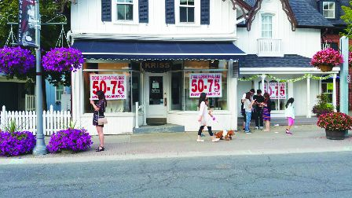

加国今年第2季营商环境转坏。（明报图片）
加拿大破产监管办公室（Office of the Superintendent of Bankruptcy）的数据显示，今年第二季度个人破产案共有35,082宗，比去年增加12.4%多，达到四年来的最高点。而企业破产情况更糟，比去年激增41.4%。
加拿大破产和重组专业人士协会（CAIRP）的报告显示，今年第二季度每天约有386名加拿大人申请破产。
安省是申请破产的人数最多，同比增加了13,309人，增幅达18.3%。该协会的主席兼持牌破产托管人博尔杜克（Andrm Bolduc）表示，许多家庭都拿到工资就偿还帐单，没有任何积蓄。最近的利率下调需要时间才能体现在人们的收入上。在此之前，破产率将居高不下。
在过去的两年，企业破产率一直在上升，今年第二季度达到了1541起。
不过，第二季度的破产数量比第一季度下降了23.1%。这可能是因为企业为了偿还疫情支持贷款而更加严格地管理财务，也可能表明企业对不断变化的经济形势持谨慎乐观的态度。
尽管如此，总体数字仍然令人担忧。他说：「破产水平仍然很高，而且由于持续的波动，破产水平可能会再次上升。」
受影响最大的行业是建筑、运输和仓储，以及行政和支持和废物管理。
博尔杜克说：「中小型企业往往特别容易受到消费支出变化的影响。」
持牌破产受托人兼Hoyes, Michalos & Associates Inc.联合创始人霍耶斯（Doug Hoyes）说，失业率正在攀升，债务「突破了屋顶」，总体而言，人们对未来不太乐观。
霍伊斯说，目前的困难是疫情政府向消费者直接发钱的副作用。这一政策现在开始困扰加拿大人，并加剧了通货膨胀。虽然这些钱在短期内使加拿大人得以维持生计，但几年后，食品杂货和其他的费用却高了许多。
他说：「我们现在正处于过渡时期，当时的影响现在开始显现出来。」博尔杜克建议负债较多的人申请破产，但是应该慎重决定。在宣布破产前谘询有执照的破产受托人，因为受托人可以帮助个人提交消费者建议书，即与债权人达成「交易」。受托人可以向债权人提供法律保护，并阻止催收电话和扣押工资。
Aaron Zhang, Local Journalism Initiative Reporter